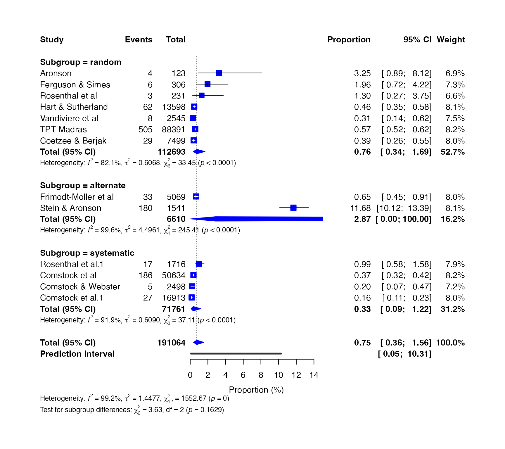
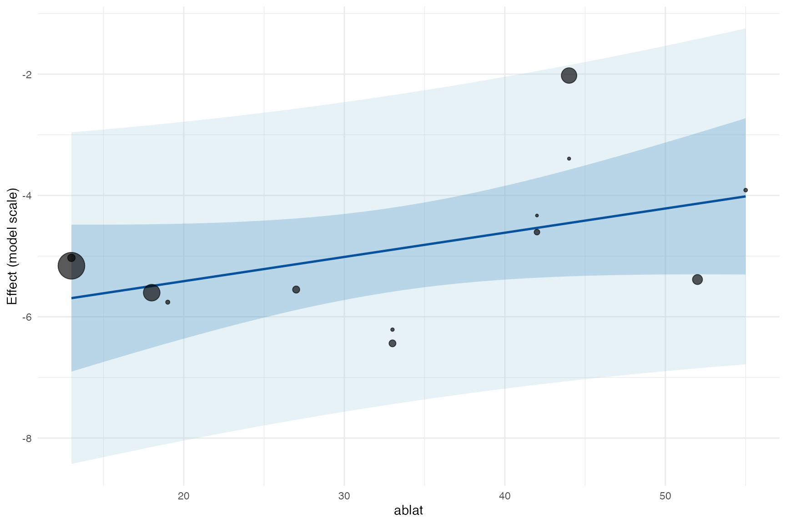
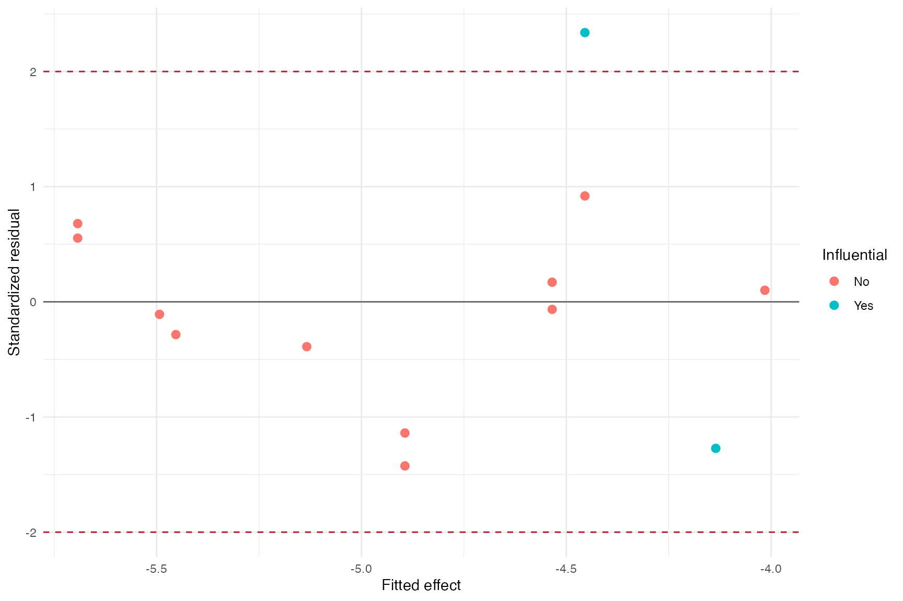
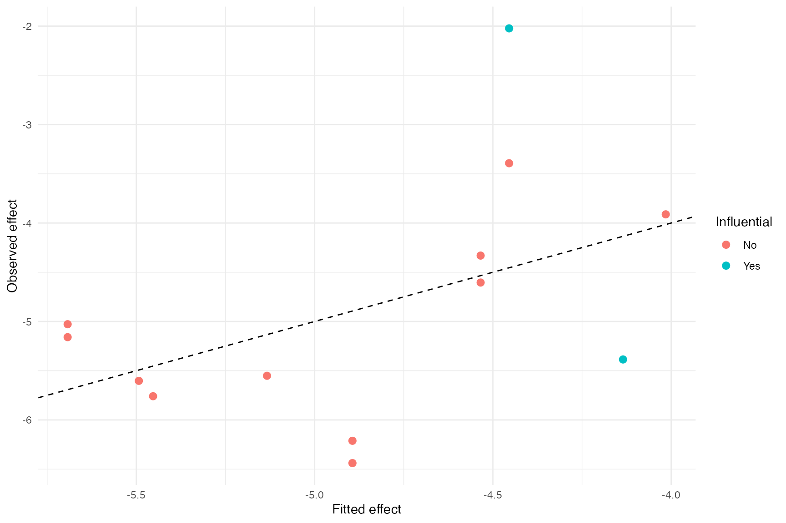
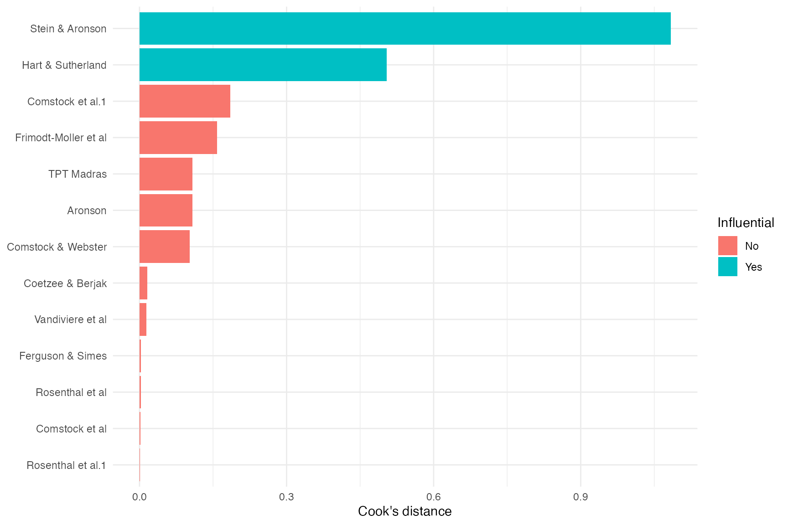

Case study: Tuberculosis proportions and meta-regression
Source:vignettes/case-proportion-regression.Rmd
case-proportion-regression.RmdThis case study estimates tuberculosis event proportions in BCG study arms and then investigates latitude as a moderator. It demonstrates single-proportion transformations and the complete meta-regression workflow.
library(metapropul)
data("dat_bcg", package = "metapropul")Proportion meta-analysis and subgroups
prop_logit <- meta_prop(
dat_bcg, event = "tpos", n = "npos",
studylab = "author", subgroup = "alloc",
sm = "PLOGIT", model = "random", ci_method = "HK"
)
summary(prop_logit)
#>
#> Meta-analysis Summary
#> ----------------------
#> Number of studies: 13
#>
#> Pooled proportion = 0.7% (95% CI: 0.4%, 1.6%)
#> Prediction interval: 0.0% – 10.3%
#> Q = 1552.67 (df = 12), p < 0.001
#> I² = 99.2%
#> Tau² = 1.4477
#>
#> Subgroup results
#> ----------------
#> random: 0.76 (95% CI: 0.34, 1.69), Tau² = 0.6068, I² = 82.1%
#> alternate: 2.87 (95% CI: 0.00, 100.00), Tau² = 4.4961, I² = 99.6%
#> systematic: 0.33 (95% CI: 0.09, 1.22), Tau² = 0.6090, I² = 91.9%
#>
#> Test for subgroup differences (random): Q = 3.63, df = 2, p = 0.163
#>
#> Notes
#> -----
#> - Proportions pooled using logit transformation and back-transformed to
#> percentages.
#> - p-value omitted for pooled proportions; focus on the confidence interval
#> and prediction interval.
#> - I² quantifies the proportion of total observed variability attributable
#> to between-study heterogeneity rather than sampling error.
#> - However, I² increases with study precision and may approach 100% even
#> when Tau² remains unchanged.
#> - Therefore, I² should not be used alone to judge heterogeneity or decide
#> whether studies should be pooled.
#> - Tau² represents the variance of true effects across studies and is
#> generally more informative than I² for judging the magnitude of
#> heterogeneity.
#> - High I² observed. Interpret cautiously because I² may be inflated in
#> large or highly precise studies.
#> - The prediction interval shows the range of effects expected in a new
#> study and helps assess clinical relevance.
#> - Confidence interval method for random-effects model: HK.
#> - The subgroup-difference test assesses whether pooled effects differ
#> between subgroup levels; a non-significant result does not prove the
#> subgroups are equivalent.
#> - Subgroup-specific prediction intervals are not shown in this summary.
#> - Decisions to pool studies should be based on clinical relevance, not
#> solely on statistical heterogeneity.
#>
#> For study-level results: object$table
prop_logit$meta.subgroup.summary
#> # A tibble: 3 × 6
#> Subgroup Estimate lower upper Tau2 I2
#> <chr> <dbl> <dbl> <dbl> <dbl> <dbl>
#> 1 random 0.756 0.337 1.69 0.607 82.1
#> 2 alternate 2.87 0.0000000151 100.0 4.50 99.6
#> 3 systematic 0.335 0.0910 1.22 0.609 91.9The Freeman–Tukey option is retained for compatibility, but its back-transformation can be difficult to interpret and can behave poorly when study sizes differ. It is shown below only as a sensitivity analysis; logit or GLMM approaches are generally preferable for the primary analysis.
prop_pft <- meta_prop(
dat_bcg, "tpos", "npos", studylab = "author",
subgroup = "alloc", sm = "PFT", model = "fixed"
)
summary(prop_pft)
#>
#> Meta-analysis Summary
#> ----------------------
#> Number of studies: 13
#>
#> Pooled proportion = 0.1% (95% CI: 0.1%, 0.1%)
#> Q = 603.89 (df = 12), p < 0.001
#> I² = 98.0%
#> Tau² = 0.0069
#>
#> Subgroup results
#> ----------------
#> random: 0.14 (95% CI: 0.13, 0.15), Tau² = 0.0010, I² = 75.9%
#> alternate: 0.52 (95% CI: 0.43, 0.61), Tau² = 0.0358, I² = 99.7%
#> systematic: 0.08 (95% CI: 0.07, 0.09), Tau² = 0.0006, I² = 91.6%
#>
#> Test for subgroup differences (common): Q = 203.96, df = 2, p < 0.001
#>
#> Notes
#> -----
#> - Proportions pooled using Freeman-Tukey double arcsine transformation and
#> back-transformed to percentages.
#> - PFT may be useful when proportions are close to 0 or 1.
#> - p-value omitted for pooled proportions; focus on the confidence interval
#> and prediction interval.
#> - I² quantifies the proportion of total observed variability attributable
#> to between-study heterogeneity rather than sampling error.
#> - However, I² increases with study precision and may approach 100% even
#> when Tau² remains unchanged.
#> - Therefore, I² should not be used alone to judge heterogeneity or decide
#> whether studies should be pooled.
#> - Tau² represents the variance of true effects across studies and is
#> generally more informative than I² for judging the magnitude of
#> heterogeneity.
#> - High I² observed. Interpret cautiously because I² may be inflated in
#> large or highly precise studies.
#> - Common-effect model used; Tau² is reported descriptively but not used for
#> weighting.
#> - The subgroup-difference test assesses whether pooled effects differ
#> between subgroup levels; a non-significant result does not prove the
#> subgroups are equivalent.
#> - Subgroup-specific prediction intervals are not shown in this summary.
#> - Decisions to pool studies should be based on clinical relevance, not
#> solely on statistical heterogeneity.
#>
#> For study-level results: object$table
render_gt(table_meta(prop_logit, title = "Tuberculosis events in BCG study arms"))| Tuberculosis events in BCG study arms | ||||
| Study | Events | Total | Weight (%) | Proportion [95% CI] |
|---|---|---|---|---|
| 1 I² = proportion of total observed variability attributable to between-study heterogeneity. Not a significance test; magnitude depends on study precision and number of studies. | ||||
forest_meta(prop_logit)
Univariable meta-regression
Latitude is centred so that the intercept refers to the effect at the mean latitude. Knapp–Hartung inference is requested explicitly.
reg_latitude <- meta_reg(
prop_logit, dat_bcg, ~ ablat,
studylab = "author", center = "ablat", test = "knha",
min_studies_per_parameter = 3
)
summary(reg_latitude)
#>
#> Meta-regression Summary
#> ------------------------
#> # A tibble: 1 × 8
#> tau2_null tau2 R2_analog QE_pval QM QM_pval k_included k_excluded
#> <dbl> <dbl> <dbl> <dbl> <dbl> <dbl> <int> <int>
#> 1 1.45 1.24 14.3 1.17e-203 3.15 0.104 13 0
#>
#> Coefficients (model scale):
#> ---------------------------
#> Term Estimate CI.Lower CI.Upper p.value
#> 1 intrcpt -4.87544515 -5.568517266 -4.18237303 8.160545e-09
#> 2 ablat 0.03993842 -0.009586665 0.08946351 1.035493e-01
#>
#> Moderator effects on odds-ratio scale:
#> --------------------------------
#> Term Estimate CI.Lower CI.Upper
#> 1 ablat 1.040747 0.9904591 1.093587
#>
#> Notes
#> -----
#> - Model-scale estimates are on the logit scale. Exponentiated moderator
#> coefficients are odds ratios; use predict_meta_reg() for predicted
#> proportions.
#> - The intercept is not back-transformed because it is often not
#> interpretable unless continuous moderators are centered.
#> - In models with interactions or uncentered continuous moderators, some
#> coefficient-based back-transformations may be difficult to interpret
#> because they depend on reference values of other moderators.
#> - R² analog = 14.319862069041%: modest proportion of between-study variance
#> explained.
#> - QE tests residual heterogeneity after accounting for moderators.
#> - QM tests whether moderators jointly explain heterogeneity.
#> - Use object$meta to access the full rma() model.
render_gt(table_meta_reg(reg_latitude))| Term | Estimate [95% CI] | p-value | Back-transformed [95% CI] |
|---|---|---|---|
| k = 13; inference = knha; residual tau-squared = 1.2404; R-squared analog = 14.319862069041% | |||
Predicted proportions
predict_meta_reg(
reg_latitude,
newdata = data.frame(ablat = c(10, 30, 50)),
scale = "response"
)
#> # A tibble: 3 × 7
#> ablat estimate conf.low conf.high pred.low pred.high scale
#> <dbl> <dbl> <dbl> <dbl> <dbl> <dbl> <chr>
#> 1 10 0.298 0.0785 1.12 0.0183 4.65 response
#> 2 30 0.660 0.326 1.33 0.0518 7.86 response
#> 3 50 1.46 0.495 4.20 0.101 17.8 responseBubble plot with confidence and prediction bands
plot_meta_reg(reg_latitude, type = "bubble", moderator = "ablat")
bubble_plot() is retained as a convenient wrapper around
the same plotting system.
bubble_plot(reg_latitude, moderator = "ablat")
Residual, fitted-value, and influence diagnostics
reg_diagnostics <- diagnose_meta_reg(reg_latitude)
reg_diagnostics$collinearity
#> # A tibble: 1 × 3
#> Term VIF flagged
#> <chr> <dbl> <lgl>
#> 1 ablat 1 FALSE
head(reg_diagnostics$studies)
#> # A tibble: 6 × 11
#> Study observed fitted residual standardized_residual cooks_distance leverage
#> <chr> <dbl> <dbl> <dbl> <dbl> <dbl> <dbl>
#> 1 Aronson -3.39 -4.45 1.06 0.919 0.108 0.110
#> 2 Fergus… -3.91 -4.02 0.103 0.100 0.00314 0.251
#> 3 Rosent… -4.33 -4.53 0.204 0.170 0.00295 0.0913
#> 4 Hart &… -5.39 -4.14 -1.25 -1.27 0.505 0.231
#> 5 Frimod… -5.03 -5.69 0.665 0.679 0.158 0.246
#> 6 Stein … -2.02 -4.45 2.43 2.34 1.08 0.132
#> # ℹ 4 more variables: dffits <dbl>, covariance_ratio <dbl>,
#> # max_abs_dfbeta <dbl>, influential <lgl>
plot_meta_reg(reg_latitude, type = "residual")
plot_meta_reg(reg_latitude, type = "fitted")
plot_meta_reg(reg_latitude, type = "influence")
Categorical moderators and interactions
The multivariable example fixes the categorical reference level, standardises latitude, and includes an interaction. With only 13 studies, it is deliberately illustrative and should not be treated as a well-powered substantive model.
reg_interaction <- meta_reg(
prop_logit, dat_bcg, ~ ablat * alloc,
studylab = "author", reference_levels = c(alloc = "random"),
scale = "ablat", min_studies_per_parameter = 2
)
summary(reg_interaction)
#>
#> Meta-regression Summary
#> ------------------------
#> # A tibble: 1 × 8
#> tau2_null tau2 R2_analog QE_pval QM QM_pval k_included k_excluded
#> <dbl> <dbl> <dbl> <dbl> <dbl> <dbl> <int> <int>
#> 1 1.45 0.638 55.9 1.28e-12 18.7 0.00220 13 0
#>
#> Coefficients (model scale):
#> ---------------------------
#> Term Estimate CI.Lower CI.Upper p.value
#> 1 intrcpt -4.92037968 -5.5678251 -4.2729343 3.546278e-50
#> 2 ablat 0.41908438 -0.1759632 1.0141319 1.674704e-01
#> 3 allocalternate 1.87586448 0.5361393 3.2155896 6.063745e-03
#> 4 allocsystematic -0.71527919 -1.7845859 0.3540275 1.898387e-01
#> 5 ablat:allocalternate 0.98088882 -0.2229612 2.1847389 1.102734e-01
#> 6 ablat:allocsystematic -0.03415198 -1.5000035 1.4316996 9.635781e-01
#>
#> Moderator effects on odds-ratio scale:
#> --------------------------------
#> Term Estimate CI.Lower CI.Upper
#> 1 ablat 1.5205687 0.8386489 2.756969
#> 2 allocalternate 6.5264587 1.7093947 24.917980
#> 3 allocsystematic 0.4890556 0.1678666 1.424794
#> 4 ablat:allocalternate 2.6668255 0.8001459 8.888327
#> 5 ablat:allocsystematic 0.9664246 0.2231294 4.185807
#>
#> Notes
#> -----
#> - Model-scale estimates are on the logit scale. Exponentiated moderator
#> coefficients are odds ratios; use predict_meta_reg() for predicted
#> proportions.
#> - The intercept is not back-transformed because it is often not
#> interpretable unless continuous moderators are centered.
#> - In models with interactions or uncentered continuous moderators, some
#> coefficient-based back-transformations may be difficult to interpret
#> because they depend on reference values of other moderators.
#> - R² analog = 55.9091720143984%: substantial proportion of between-study
#> variance explained.
#> - QE tests residual heterogeneity after accounting for moderators.
#> - QM tests whether moderators jointly explain heterogeneity.
#> - Use object$meta to access the full rma() model.
diagnose_meta_reg(reg_interaction)$collinearity
#> # A tibble: 5 × 3
#> Term VIF flagged
#> <chr> <dbl> <lgl>
#> 1 ablat 1.55 FALSE
#> 2 allocalternate 1.18 FALSE
#> 3 allocsystematic 1.13 FALSE
#> 4 ablat:allocalternate 1.41 FALSE
#> 5 ablat:allocsystematic 1.23 FALSE